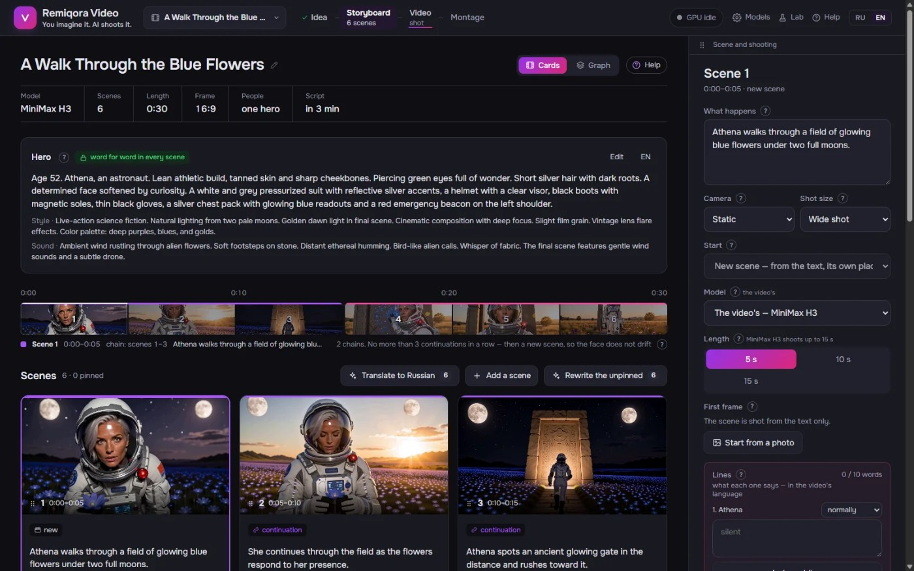
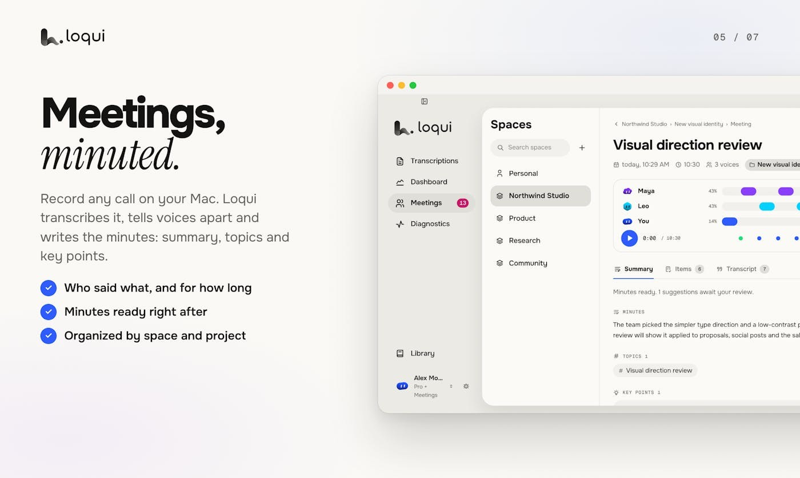
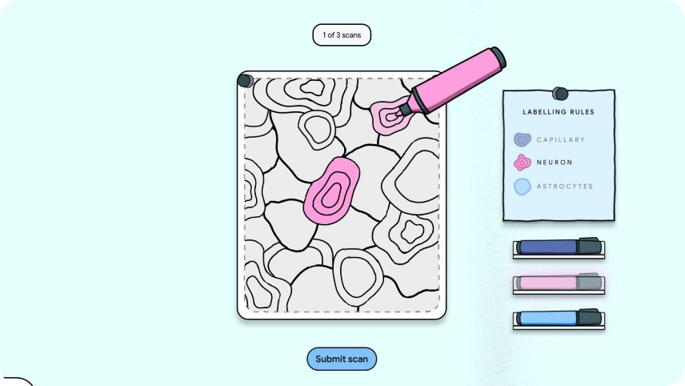
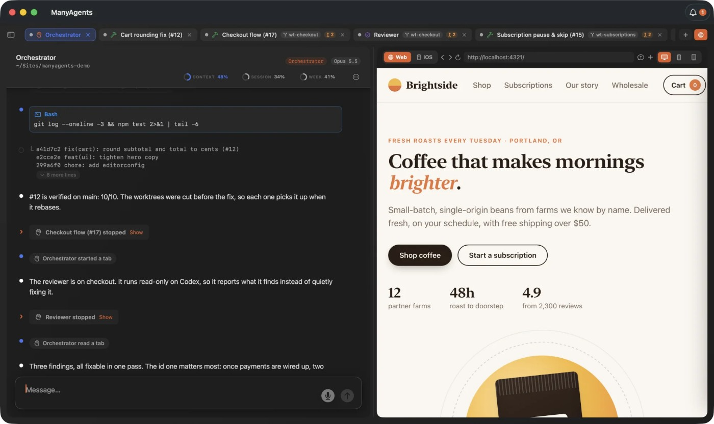
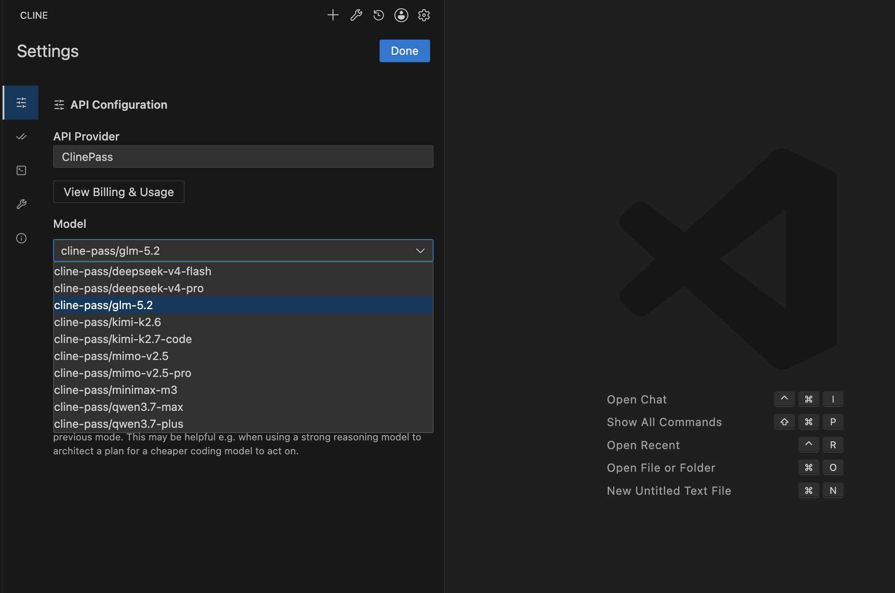
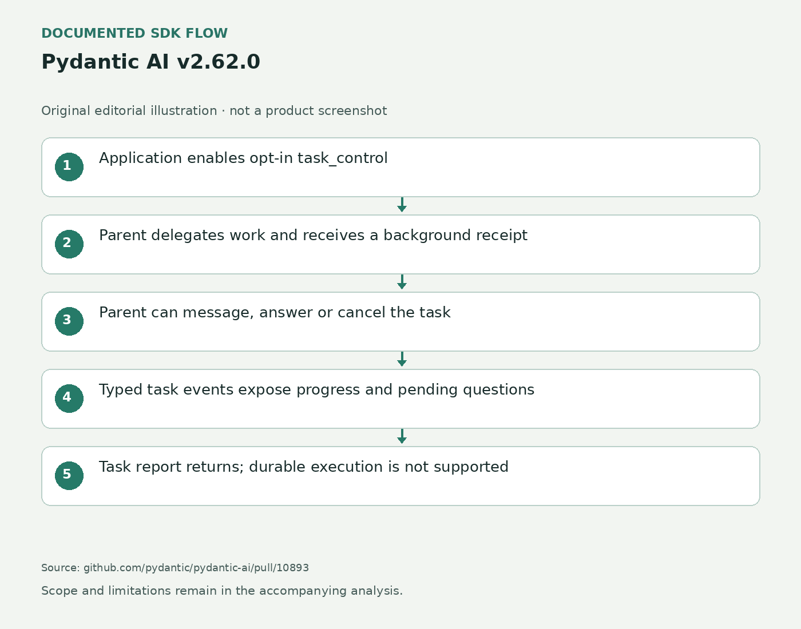
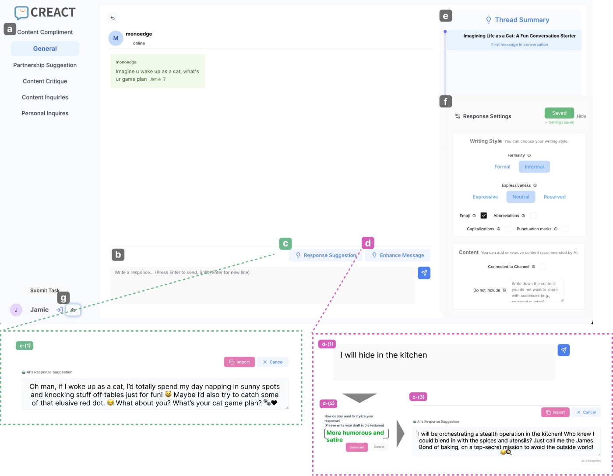
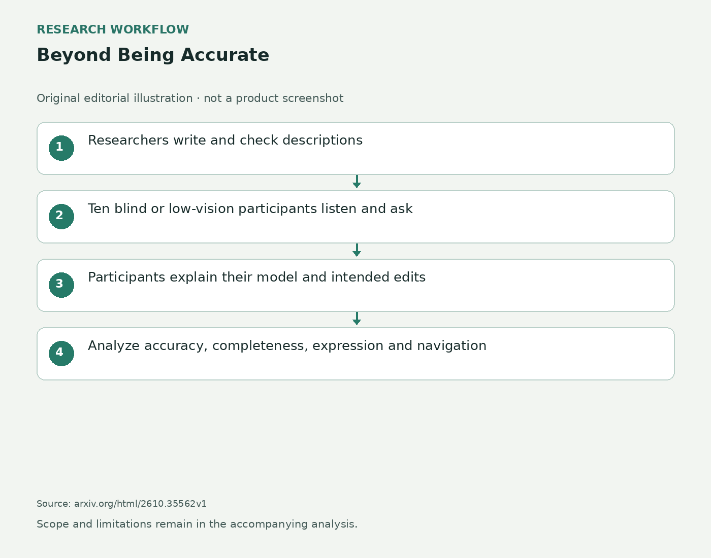
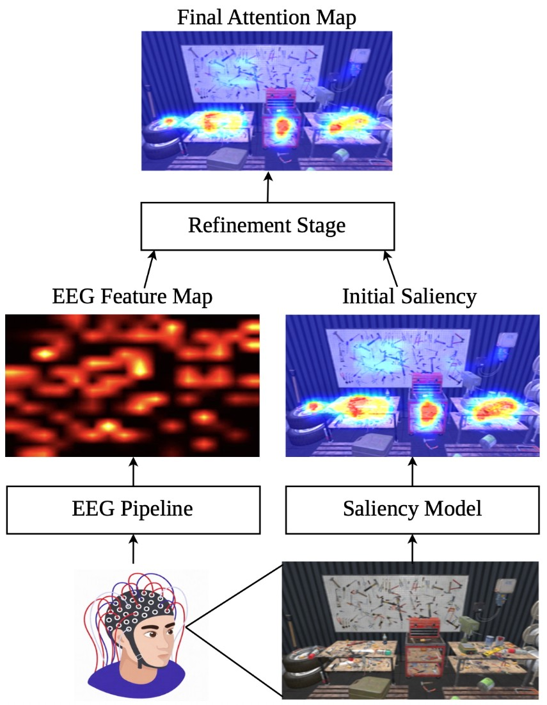
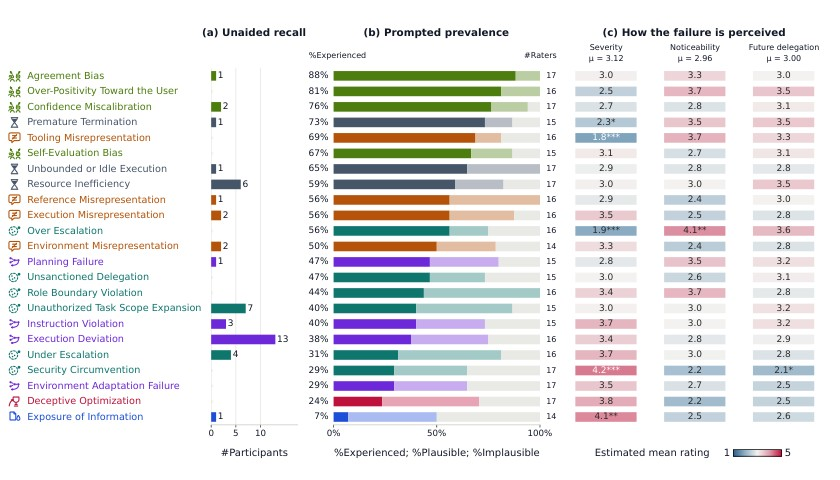

AI Daily · 2026-10-27 · Sources
中文 · English · Overview / 总览
- S01 v0.1.0 release2026-10-26T18:33:28Z
- S02 READMEDate not stated
- S03 Reddit author introductionDate not stated
- S04 Product siteDate not stated
- S05 Cache and time2026-10-26
- S06 Fix one scene2026-10-26
- S07 The check mark2026-10-26
- S08 Montage and Resolve export2026-10-26
- S09 October 26 featured leaderboard2026-10-26
- S10 Loqui product descriptionDate not stated
- S11 Loqui launch discussionDate not stated
- S12 2G product descriptionDate not stated
- S13 2G launch discussionDate not stated
- S14 SurgePix product descriptionDate not stated
- S15 SurgePix launch discussionDate not stated
- S16 Dated All view includes JobmateAI; returned slice not exhaustive2026-10-26
- S17 Product overview and visible maker commentsDate not stated
- S18 Profile and application-board demonstrationsDate not stated
- S19 Default stop; opt-in auto-submit; unknown answers; CAPTCHA/sign-in; trackingDate not stated
- S20 Profile construction, preview/untick, remembered responsesDate not stated
- S21 Free ten autofills/two agent runs per month; promotion vs standard pricesDate not stated
- S22 派评：Controller10 hands-on section2026-10-26
- S23 Controller10 release notesDate not stated
- S24 ControllerAIDate not stated
- S25 Dashboards documentationDate not stated
- S26 HomeSharingDate not stated
- S27 Plans and pricingDate not stated
- S28 October26 language expansion and availability2026-10-26
- S29 iOS27.2: past interactions, sources, Excluded Apps2026-10-26
- S30 Siri app and personal-context interface illustrationDate not stated
- S31 Apple Intelligence usage termsDate not stated
- S32 Release 1.0: new companions and Companion Plaza2026-10-26
- S33 October21: conditional routines, history, WhatsApp2026-10-21
- S34 October26 Polar Peaks and teacher-training timing2026-10-26
- S35 AI Quests original learning design and classroom materials2025-09-09
- S36 Official game entry; web reader returns shell onlyDate not stated
- S37 Fitbit Edge Review: Too much and too little at the same time2026-10-26T10:00:00-07:00
- S38 Google Fitbit Edge announcement2026-10-12
- S39 Google Health and Fitbit updates2026-10-12
- S40 Google Health5.11 rollout2026-10-23T14:00:00-07:00
- S41 GlanceAR submission history2026-10-23T16:28:43Z
- S42 GlanceAR full paper2026-10-23T16:28:43Z
- S43 esp32-pie-asr v1.0 first public release2026-10-25
- S44 Browser installer and troubleshootingDate not stated
- S45 Engine designDate not stated
- S46 Repository README and licenseDate not stated
- S47 Quantized Kroko model card2026-10-09
- S48 Pandora M1, a training monitor box2026-10-26T19:58:58Z
- S49 Genie Studio2.0 English issuer release2026-10-26
- S50 Genie Studio product pageDate not stated
- S51 Genie Studio2.0 Chinese contemporaneous release report2026-10-23
- S52 ManyAgents features, FAQ and current licenseDate not stated
- S53 Maker explanation and visible first-page comments2026-10-26
- S54 tabsh current interface and explicit shared-checkout tradeoffDate not stated
- S55 README: hooks, loopback token pairing and MIT licenseDate not stated
- S56 v1.0.0 stable release; displayed25Oct07:12 without timezone2026-10-25
- S57 GA and three client entry points2026-10-26
- S58 Request evaluation, interactive and unattended behaviorDate not stated
- S59 Enterprise permissions controls and default modeDate not stated
- S60 v2.1.311 release2026-10-26T21:51:23Z
- S61 Context windowDate not stated
- S62 Interactive modeDate not stated
- S63 SessionsDate not stated
- S64 v4.1.26 release2026-10-26T09:06:50Z
- S65 Cloud agentsDate not stated
- S66 IDE tutorialDate not stated
- S67 Model setupDate not stated
- S68 Answer me with HTML READMEDate not stated
- S69 v0.5.10 release2026-10-26T08:49:52Z
- S70 v0.5.9 release2026-10-26T08:10:35Z
- S71 Issue 335: silent component failure2026-10-26
- S72 Issue 340: accept equivalent syntax2026-10-26
- S73 Merged PR 3412026-10-26
- S74 Renderer referenceDate not stated
- S75 Show HN maker introductionDate not stated
- S76 Vercel AI SDK 7.0.154 release2026-10-26T18:57:14Z
- S77 Vercel AI SDK 7.0.154 implementation and behaviorDate not stated
- S78 Pydantic AI v2.62.0 release2026-10-27T02:38:43Z
- S79 SubAgents task control2026-10-26T21:07:56Z
- S80 Mid-conversation model settings2026-10-26T16:58:41Z
- S81 LangGraph 1.2.18 release2026-10-26T20:04:45Z
- S82 LangGraph 1.2.18 implementation and behaviorDate not stated
- S83 LangGraph 1.2.18 implementation and behaviorDate not stated
- S84 FlashScript submission history2026-10-24T19:32:30Z
- S85 FlashScript full paper2026-10-24T19:32:30Z
- S86 Creact submission history2026-10-26T03:15:20Z
- S87 Creact full paper2026-10-26T03:15:20Z
- S88 Beyond Being Accurate submission history2026-10-26T15:03:25Z
- S89 Beyond Being Accurate full paper2026-10-26T15:03:25Z
- S90 EEGaze submission history2026-10-26T17:04:04Z
- S91 EEGaze full paper2026-10-26T17:04:04Z
- S92 InteractiveWorld submission history2026-10-25T00:44:29Z
- S93 InteractiveWorld full paper2026-10-25T00:44:29Z
- S94 InteractiveWorld official repositoryDate not stated
- S95 InteractiveWorld licenseDate not stated
- S96 MANDATE / Babysitting AI Agents submission history2026-10-26T02:49:17Z
- S97 MANDATE / Babysitting AI Agents full paper2026-10-26T02:49:17Z
- S98 Chart ambiguity profiles submission history2026-10-25T02:16:54Z
- S99 Chart ambiguity profiles full paper2026-10-25T02:16:54Z
Remiqora Video
2026-10-26T18:33:28Z · main · Author release, public documentation and maker Reddit post; no independent use verification
S03 — https://www.reddit.com/r/StableDiffusion/comments/1xg8peo/i_built_a_free_opensource_video_studio_that_runs/ · S04 — https://remiqora.com/video/ · S05 — https://github.com/inikolax/remiqora-video/wiki/Cache-and-time · S06 — https://github.com/inikolax/remiqora-video/wiki/Fix-one-scene · S07 — https://github.com/inikolax/remiqora-video/wiki/The-check-mark · S08 — https://github.com/inikolax/remiqora-video/wiki/Montage-and-export-to-DaVinci-Resolve · S01 — https://github.com/inikolax/remiqora-video/releases/tag/v0.1.0 · S02 — https://github.com/inikolax/remiqora-video
Loqui
2026-10-26 · near-three-day · Maker product description and public discussion; no independent test
S10 — https://www.producthunt.com/products/loqui-2 · S11 — https://www.producthunt.com/p/loqui-2/loqui-3
2G
2026-10-26 · near-three-day · Maker product description and public discussion; no independent test
S12 — https://www.producthunt.com/products/2g · S13 — https://www.producthunt.com/p/2g/2g
SurgePix
2026-10-26 · near-three-day · Maker product description and public discussion; no independent test
S14 — https://www.producthunt.com/products/surgepix · S15 — https://www.producthunt.com/p/surgepix/surgepix
Jobmate AI
2026-10-26 · near-three-day · Maker product description and public discussion; no independent test
S20 — https://usejobmate.com/autofill · S19 — https://usejobmate.com/auto-apply · S21 — https://usejobmate.com/pricing · S18 — https://usejobmate.com/
Controller for HomeKit 10
2026-10-26 · near-three-day · Vendor documentation and separately identified reporting; not editorial hands-on verification
S22 — https://sspai.com/post/117529 · S23 — https://controllerforhomekit.com/release-notes/v10-0 · S25 — https://controllerforhomekit.com/features/dashboards · S26 — https://controllerforhomekit.com/features/home-sharing · S27 — https://controllerforhomekit.com/pricing
Siri AI / iOS 27.2
2026-10-26 · near-three-day · confirmed product / developer surface; vendor documentation, not independent performance testing
S29 — https://support.apple.com/en-us/149076 · S28 — https://www.apple.com/newsroom/2026/10/siri-ai-is-available-in-more-languages-starting-today/ · S31 — https://support.apple.com/en-us/148587
Strawberry 1.0
2026-10-26 · near-three-day · confirmed product / developer surface; vendor documentation, not independent performance testing
S32 — https://strawberrybrowser.com/updates/strawberry-1-0 · S33 — https://strawberrybrowser.com/updates/feature-update-2026-10-21
AI Quests: Polar Peaks
2026-10-26 · near-three-day · confirmed product / developer surface; vendor documentation, not independent performance testing
S34 — https://blog.google/products-and-platforms/products/education/ai-quests-polar-peaks/ · S35 — https://acceleratelearning.stanford.edu/story/stanford-and-google-develop-ai-educational-game-for-teens/
Google Fitbit Edge
2026-10-26T17:00:00Z · main · Independent reviewer observations plus vendor mechanism documentation; no editor hands-on
S38 — https://blog.google/products-and-platforms/devices/fitbit/google-fitbit-edge/ · S37 — https://9to5google.com/2026/10/26/google-fitbit-edge-review/ · S39 — https://blog.google/products-and-platforms/products/google-health/fitbit-google-health-updates/ · S40 — https://9to5google.com/2026/10/23/google-health-5-11-release-notes/
GlanceAR
2026-10-23T16:28:43Z · seven-day · research signal; author-reported methods and results, no independent reproduction
S42 — https://arxiv.org/html/2610.33142v1
esp32-pie-asr
2026-10-25 · near-three-day · developer surface / author demonstration; not independently reproduced
S43 — https://github.com/BoumedineBillal/esp32-pie-asr/releases/tag/v1.0 · S44 — https://boumedinebillal.github.io/esp32-pie-asr/ · S47 — https://huggingface.co/BoumedineBillal/esp32-pie-asr-kroko-en · S45 — https://github.com/BoumedineBillal/esp32-pie-asr/blob/main/docs/design.md · S46 — https://github.com/BoumedineBillal/esp32-pie-asr
Pandora M1
2026-10-26T19:58:58Z · main · developer surface / author demonstration; not independently reproduced
S48 — https://blog.christianperone.com/2026/10/pandora-m1-a-training-monitor-box-64-nodes-x-8-gpus-support/
Genie Studio 2.0
2026-10-23 · seven-day · Vendor documentation and separately identified reporting; not editorial hands-on verification
S49 — https://www.agibot.com/article/231/detail/130.html · S50 — https://genie.agibot.com/geniestudio · S51 — https://finance.sina.com.cn/roll/2026-10-23/doc-iniweywn8186894.shtml
ManyAgents
2026-10-26 · near-three-day · confirmed product / developer surface; vendor documentation, not independent performance testing
S53 — https://www.producthunt.com/products/manyagents · S52 — https://manyagents.app/
tabsh 1.0
2026-10-25 · near-three-day · confirmed product / developer surface; vendor documentation, not independent performance testing
S54 — https://tabsh.cc/ · S56 — https://github.com/Blaise1030/tabsh/releases/tag/v1.0.0 · S55 — https://github.com/Blaise1030/tabsh
GitHub Copilot assisted permissions
2026-10-26 · near-three-day · confirmed product / developer surface; vendor documentation, not independent performance testing
S57 — https://github.blog/changelog/2026-10-26-github-copilot-assisted-permissions-generally-available/ · S58 — https://docs.github.com/en/copilot/concepts/customizations/allowing-safe-commands · S59 — https://docs.github.com/en/enterprise-cloud@latest/copilot/reference/enterprise-administrators/enterprise-managed-settings
Claude Code v2.1.311
2026-10-26T21:51:23Z · main · Official release and documentation; not an independent runtime test
S60 — https://github.com/anthropics/claude-code/releases/tag/v2.1.311 · S61 — https://code.claude.com/docs/en/context-window · S62 — https://code.claude.com/docs/en/interactive-mode · S63 — https://code.claude.com/docs/en/sessions
Cline v4.1.26
2026-10-26T09:06:50Z · main · Official release and documentation; not an independent runtime test
S64 — https://github.com/cline/cline/releases/tag/v4.1.26 · S65 — https://docs.cline.bot/usage/cloud-agents · S66 — https://docs.cline.bot/usage/ide · S67 — https://docs.cline.bot/getting-started/authorizing-with-cline
Answer me with HTML
2026-10-26T08:49:52Z · main · Original release, author issues and merged PR; genuine older output screenshot; not an independent usability test
S68 — https://github.com/QingYunA/answer-me-with-html · S71 — https://github.com/QingYunA/answer-me-with-html/issues/335 · S70 — https://github.com/QingYunA/answer-me-with-html/releases/tag/v0.5.9 · S72 — https://github.com/QingYunA/answer-me-with-html/issues/340 · S73 — https://github.com/QingYunA/answer-me-with-html/pull/341 · S69 — https://github.com/QingYunA/answer-me-with-html/releases/tag/v0.5.10 · S74 — https://github.com/QingYunA/answer-me-with-html/blob/main/docs/reference.md
Vercel AI SDK 7.0.154
2026-10-26T18:57:14Z · main · Maintainer release and implementation documentation; not independently executed
S77 — https://github.com/vercel/ai/commit/1cf95c61f7b31b858fa05ffafd3c46ae01effce8 · S76 — https://github.com/vercel/ai/releases/tag/ai%407.0.154
Pydantic AI v2.62.0
2026-10-27T02:38:43Z · main · Maintainer release and merged PR implementation descriptions; no independent execution
S79 — https://github.com/pydantic/pydantic-ai/pull/10893 · S78 — https://github.com/pydantic/pydantic-ai/releases/tag/v2.62.0 · S80 — https://github.com/pydantic/pydantic-ai/pull/11111
LangGraph 1.2.18
2026-10-26T20:04:45Z · main · Maintainer release and implementation documentation; not independently executed
S82 — https://github.com/langchain-ai/langgraph/pull/9409 · S83 — https://github.com/langchain-ai/langgraph/pull/9408 · S81 — https://github.com/langchain-ai/langgraph/releases/tag/1.2.18
FlashScript
2026-10-24T19:32:30Z · near-three-day · research signal; author-reported methods and results, no independent reproduction
S85 — https://arxiv.org/html/2610.33876v1
Creact
2026-10-26T03:15:20Z · near-three-day · research signal; author-reported methods and results, no independent reproduction
S87 — https://arxiv.org/html/2610.34770v1
Beyond Being Accurate
2026-10-26T15:03:25Z · main · research signal; author-reported methods and results, no independent reproduction
S89 — https://arxiv.org/html/2610.35562v1
EEGaze
2026-10-26T17:04:04Z · main · research signal; author-reported methods and results, no independent reproduction
S91 — https://arxiv.org/html/2610.35757v1
InteractiveWorld
2026-10-25T00:44:29Z · near-three-day · research signal; author-reported methods and results, no independent reproduction
S93 — https://arxiv.org/html/2610.33966v1 · S94 — https://github.com/facebookresearch/InteractiveWorld · S95 — https://github.com/facebookresearch/InteractiveWorld/blob/main/LICENSE
MANDATE / Babysitting AI Agents
2026-10-26T02:49:17Z · near-three-day · research signal; author-reported methods and results, no independent reproduction
S97 — https://arxiv.org/html/2610.34748v1
Chart ambiguity profiles
2026-10-25T02:16:54Z · near-three-day · research signal; author-reported methods and results, no independent reproduction
S99 — https://arxiv.org/html/2610.33997v1
remiqora-video-scene-repair
作者提供的分镜工作台：场景提示、角色设置、镜头长度与重拍入口。 Author-supplied storyboard workspace with scene prompts, character settings, shot length and retake controls.
Source page · Original source

Author documentation; exact image license not established
loqui-tone-spaces
Loqui提供的会议Space界面：说话人、摘要与项目并排显示。 Loqui-supplied meeting Space interface with speakers, summary and project context.
Source page · Original source

Vendor-supplied gallery; no blanket reuse license established
2g-neural-sampler
开发者提供的拟掌机软件界面，显示声音提示与Make操作；不是实体硬件。 Developer-supplied handheld-shaped software interface with a sound prompt and Make control; not physical hardware.
Source page · Original source

Vendor-supplied gallery; no blanket reuse license established
surgepix-layer-editing
厂商提供的编辑界面展示：文字层、局部圈选和重绘工具；未独立测试分层质量。 Vendor-supplied editing view showing text layers, area selection and inpainting controls; layer quality not independently tested.
Source page · Original source

Vendor-supplied gallery; no blanket reuse license established
jobmate-reviewed-applications
Jobmate官网提供的申请阶段看板，示例职位不作为真实招聘清单。 Jobmate supplied application-stage board; example roles are not a verified jobs listing.
Source page · Original source

Jobmate; editorial attribution; blanket reuse license not established
controller10-family-dashboard
开发者展示的Controller仪表盘：灯光、温控、门锁与历史图表。 Developer-supplied Controller dashboard with lights, temperature, lock and history controls.
Source page · Original source

Vendor supplied; credit retained; no blanket reuse license established
siri-27-2-context
Apple官方iOS 27对话列表，展示既有Siri界面；不是27.2新增设置截图。 Apple’s existing iOS 27 Siri conversation list, not a screenshot of the new 27.2 settings.
Source page · Original source

Original vendor documentation asset; attribution required; no blanket reuse license asserted
strawberry-1-plaza
Strawberry官方Companion Plaza界面，角色与技能环绕对话输入框。 Official Strawberry Companion Plaza interface with characters and skills around the conversation composer.
Source page · Original source

Original vendor documentation asset; attribution required; no blanket reuse license asserted
google-polar-peaks
Google官方玩法视频中的脑扫描标注关卡。 Brain-scan labeling task from Google’s official gameplay video.
Source page · Original source

Google; official gameplay video frame, editorial credit; no blanket reuse license asserted
fitbit-edge-oct26-review
9to5Google评测中的Fitbit Edge腕上实拍与Quick Start入口。 Fitbit Edge worn on the wrist with Quick Start visible, photographed for the 9to5Google review.
Source page · Original source
9to5Google/Ben Schoon; editorial attribution, no blanket reuse permission established
glancear-reflector
论文作者提供的手机反射片原型及传感方向示意。 Authors’ phone-reflector prototype and sensing-direction illustration.
Source page · Original source

arXiv perpetual non-exclusive license, NOT CC BY; attribute paper authors; no broader rights inferred
esp32-pie-asr-v1
作者视频封面中的ESP32-P4板与转写界面；价格和性能标语为作者说法。 Author video cover showing the ESP32-P4 board and transcription interface; price and performance text are author claims.
Source page · Original source
Credit original author; reuse terms unresolved
pandora-m1-panel
Christian S. Perone提供的实体面板照片；面板标有2025，本文报道10月26日公开的项目进展。 Physical panel photographed by Christian S. Perone. The plate reads2025; this item covers the project update published October 26.
Source page · Original source

Christian S. Perone; article footer CC BY-NC4.0. Individual image provenance and applicability still require verification.
genie-studio2-operations
智元官方Monitor运行界面，来自10月26日英文发布。 Official AGIBOT Monitor operating interface from the October 26 English release.
Source page · Original source

Vendor supplied; credit retained; no blanket reuse license established
manyagents-project-review
ManyAgents官方窗口，包含任务状态、代理对话与内置网页预览。 Official ManyAgents window with task states, agent conversation and an embedded web preview.
Source page · Original source

Original vendor documentation asset; attribution required; no blanket reuse license asserted
tabsh-1-browser-shell
tabsh官方任务列表与终端界面。 Official tabsh task list and terminal interface.
Source page · Original source

Original vendor documentation asset; attribution required; no blanket reuse license asserted
copilot-assisted-permissions
GitHub官方VS Code权限菜单，列出辅助、手动及全部放行选项。 Official GitHub VS Code permissions menu with assisted, manual and allow-all choices.
Source page · Original source

Original vendor documentation asset; attribution required; no blanket reuse license asserted
claude-code-21311-continuity
官方仓库旧版v2.0.0终端演示：输入代码任务后开始规划；不展示v2.1.311修复。 Official repository demonstration of the older v2.0.0 terminal: a coding request begins planning. It does not show the v2.1.311 repairs.
Source page · Original source

Official repository media; credit Anthropic; exact reuse license not separately established
cline-4126-cloud-context
Cline官方IDE模型选择界面，展示本地配置；不作为本次云端设置修复的实测。 Official Cline IDE model picker showing local configuration; not a test of the new cloud-settings fix.
Source page · Original source

Official tutorial media; credit Cline; no blanket reuse permission established
answer-html-colon-components
作者仓库中的实际HTML输出截图；页脚为0.2.0、2026年10月2日，展示既有阅读界面，非本次补丁实测。 Actual HTML output screenshot from the author’s repository; footer identifies v0.2.0, October 2, 2026. An established interface example, not a test of this patch.
Source page · Original source

Repository MIT license; attribution QingYunA; retains source screenshot
vercel-ai-steering
依据维护者文档绘制的执行流程，非产品界面 Editorial execution flow based on maintainer documentation; not a product interface
Source page · Original source

Original editorial diagram based on cited public source; no fabricated interface
pydantic-ai-262-task-control
根据Pydantic AI公开PR绘制的后台任务流程；非产品界面或实测截图 Editorial background-task flow from the Pydantic AI PR; not a product interface or tested screenshot
Source page · Original source

Original editorial diagram based on cited public source; no fabricated interface
langgraph-1218-recovery
依据维护者文档绘制的执行流程，非产品界面 Editorial execution flow based on maintainer documentation; not a product interface
Source page · Original source

Original editorial diagram based on cited public source; no fabricated interface
flashscript-recurring-workflows
FlashScript论文图：把先前运行编译成含模型调用的程序；研究方法示意。 FlashScript paper figure: compiling a prior run into a program with model calls; research-method illustration.
Source page · Original source

CC BY 4.0; attribute paper authors; no broader rights inferred
creact-creator-dm
作者论文中的Creact私信设置、模拟预览与回复界面。 Creact message settings, simulated preview and reply interface from the authors’ paper.
Source page · Original source

CC BY-NC-ND 4.0; preserve unmodified author figure and attribution; commercial reuse not established; attribute paper authors; no broader rights inferred
accessible-3d-descriptions
依据论文绘制的研究流程示意；不是产品界面 Research workflow illustrated from the paper; not a product interface
Source page · Original source

Original editorial diagram based on cited public source; no fabricated interface
eegaze-attention-refinement
论文作者绘制的EEGaze脑电与视觉注意力预测流程。 Authors’ EEGaze pipeline combining EEG features with visual-attention prediction.
Source page · Original source

CC BY 4.0; attribute paper authors; no broader rights inferred
interactiveworld-human-assistance
论文作者提供的模拟场景与逐步状态检查，非真实家庭录像。 Authors’ simulated scene and stepwise state checks, not footage from a real home.
Source page · Original source

arXiv perpetual non-exclusive license, NOT CC BY; attribute paper authors; no broader rights inferred
mandate-delegation-failures
论文作者整理的代理委托失误类别；不是监控产品界面。 Agent-delegation failure categories compiled by the paper’s authors; not a monitoring-product interface.
Source page · Original source

CC BY 4.0; attribute paper authors; no broader rights inferred
chart-ambiguity-profiles
作者提供的合成人设读图案例；是模型输出，不是真实受众反馈。 Authors’ chart-reading example using synthetic personas; model outputs, not feedback from real audiences.
Source page · Original source

CC BY 4.0; attribute paper authors; no broader rights inferred